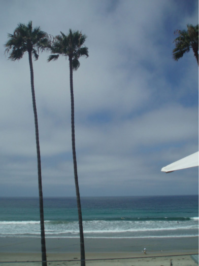
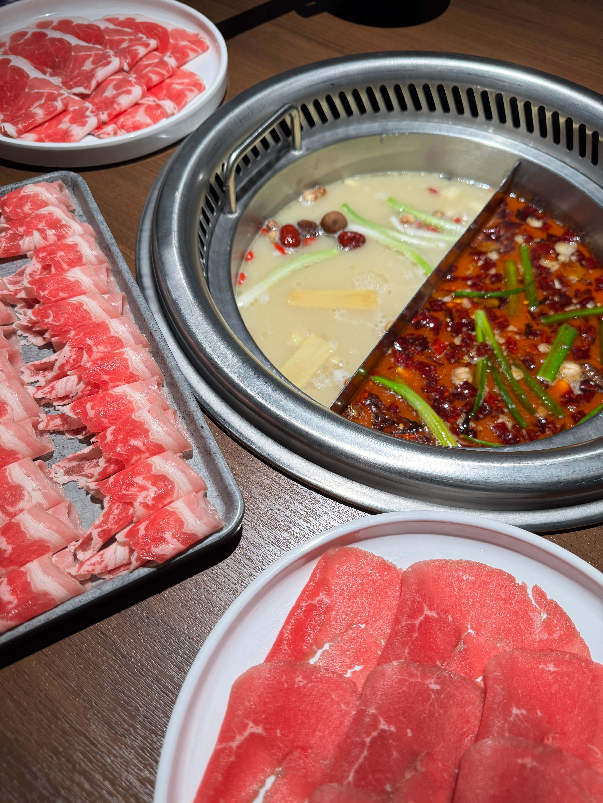

Blog Post 4
Part One: Peer Review

My classmate Jon shared his photos with me, and the theme of his photos were places he’s cried at. I thought this was a funny and interesting concept because it brings humor to a vulnerable concept. All of his photos looked very serene and aesthetically pleasing, contrasting the theme. Just by looking at his photos though, I do not think I would be able to guess the narrative behind the photos. There was nothing obvious that stood out to me.
To make his photos more visually appealing, I think he could add a filter over the images to match the sad tone, or take the complete opposite approach and add fun, vibrant colors to juxtapose the sad tone. He could also try to pick odd positions in the photo that would seem like an interesting place to cry. For example, one of his photos involved the beach. He could make the focal point the ocean and say he cried in the ocean with fish swimming all around him.
Part Two: My Project

I am a hot pot lover. I grew up eating hot pot anytime there was a special occasion or when there was a big family gathering. For my Every Picture project, I want to recreate the joy I feel when I eat a hot pot meal and share the experience with others by allowing them to create their own hot pot. Customizing your hot pot meal is the fun part because you get to choose your own ingredients so it is specific to you. I took the photo from an aerial view angle because it captures the entire pot better and that’s when you know things are getting serious– when you have to stand to fish ingredients out of the pot. I plan on cropping out just the pot as well as cropping other individual ingredients from other photos so that the focus is on the ingredient itself when users select which ingredients they want in their hot pot.